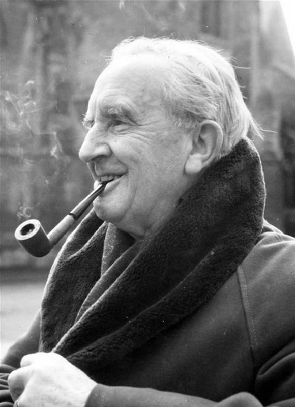

J.R.R. Tolkien was born in Bloemfontein in the Orange Free State in 1892. Tolkien could fluently read and write at the age of four, and began inventing his own languages shortly after. He was a professor and tutor at several universities, and wrote 'The Hobbit' and the first two volumes of 'The Lord of the Rings' during his time at Pembroke College. Due to the popularity of his fantasy works, Tolkien has been called the "father" of modern fantasy literature.
